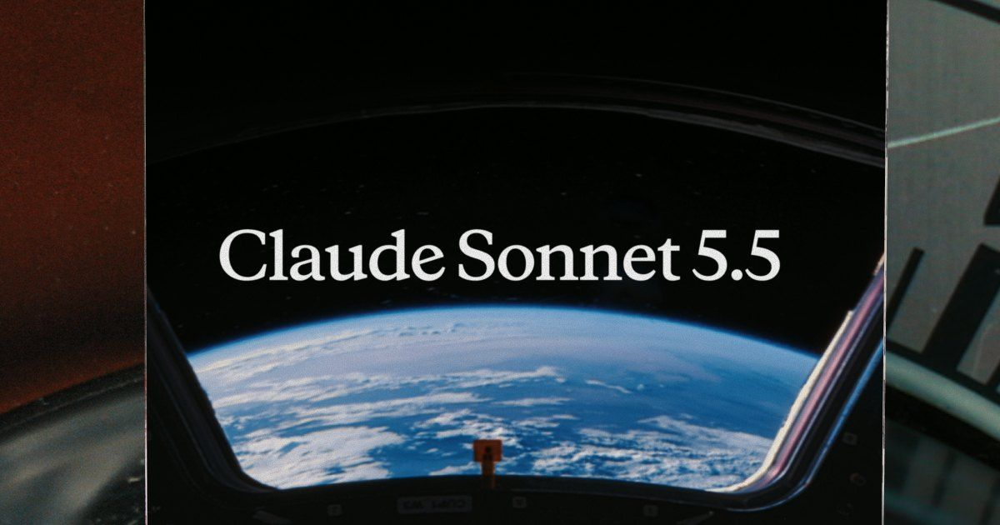
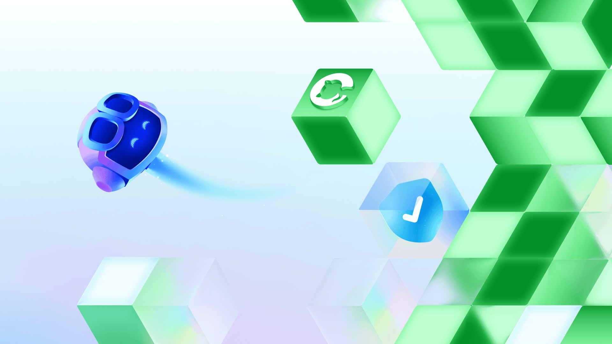
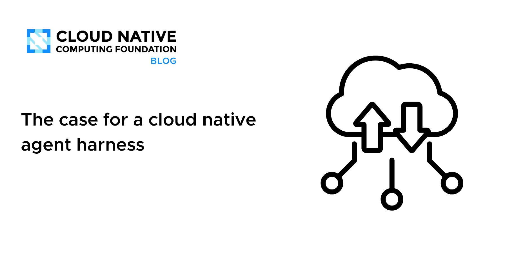
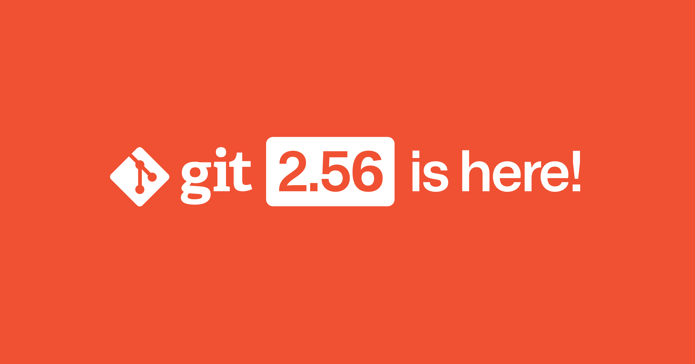
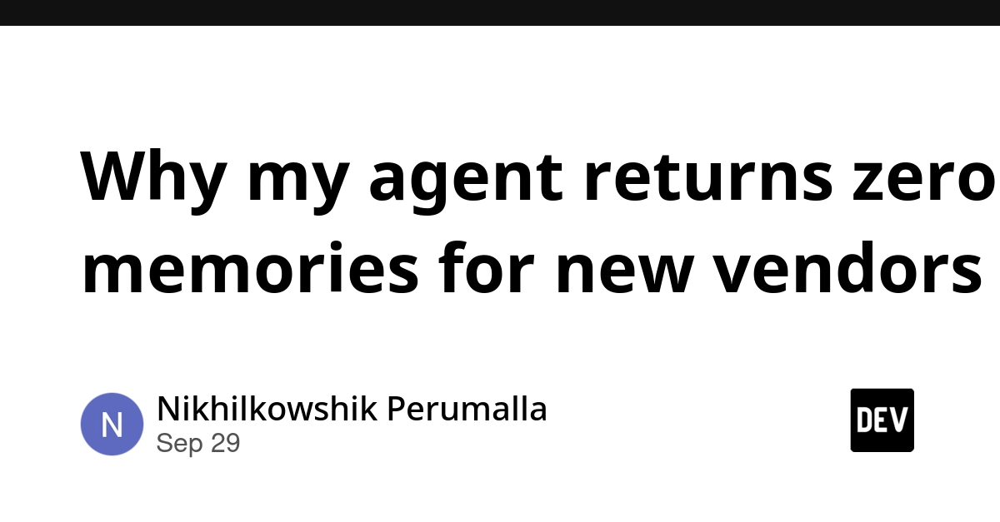
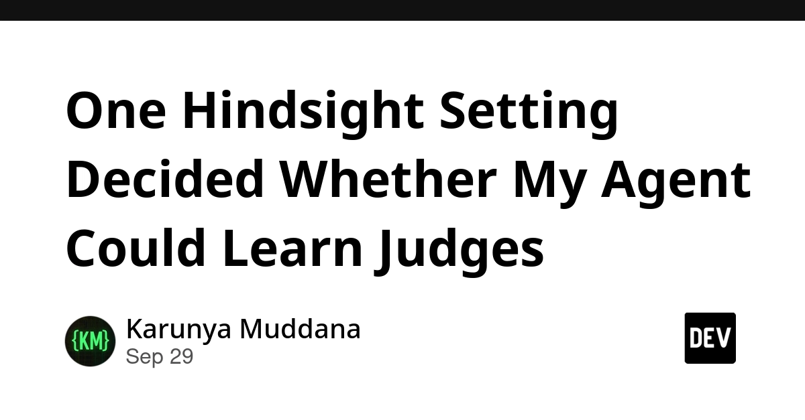
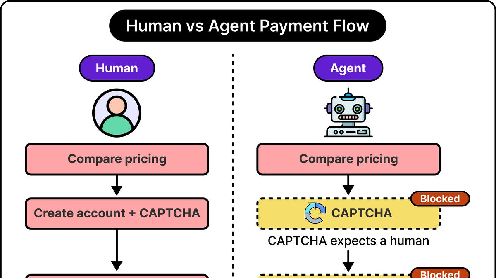
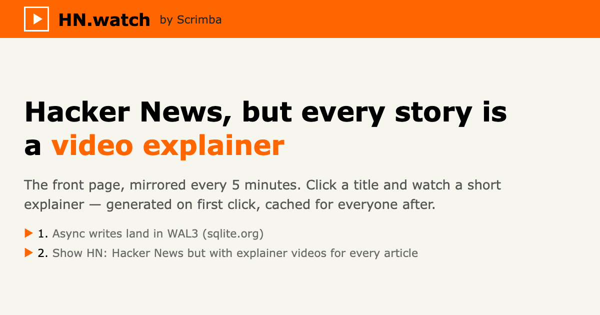
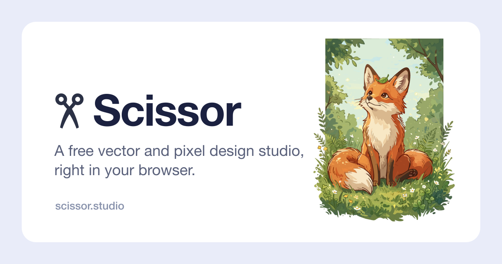
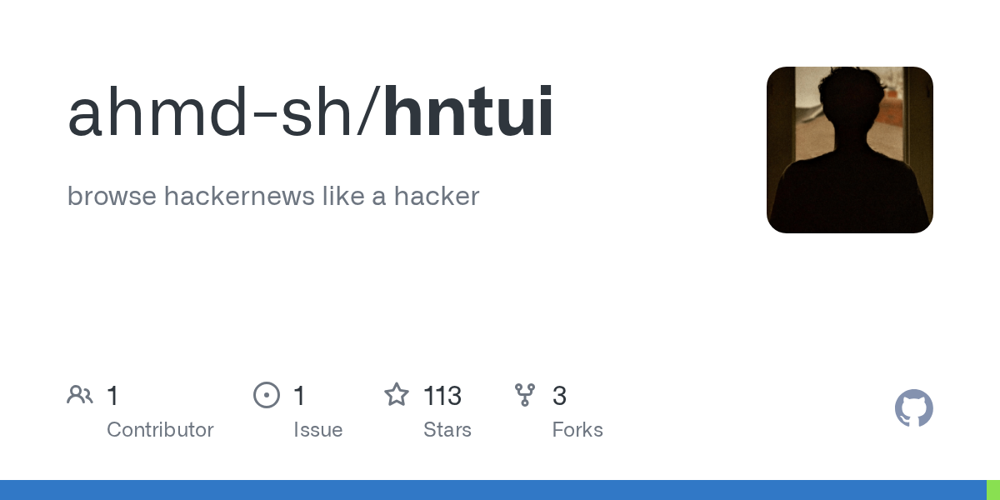

🔥 Top 3 (must read)
Claude Sonnet 5.5
Anthropic released a new Sonnet model. It says the model "runs 30%+ faster, and costs up to 30% less for most work" at the same price as Sonnet 5. Simon Willison's first look notes it beats Sonnet 5 on every benchmark. The system card (PDF) is also out. Why it matters: If your team uses Claude Code or the Claude API, this could make daily agent work faster and cheaper without changing anything else.

How we found 24 Android vulnerabilities using our open source AI security agent
GitHub explains the targeted AI taskflows it used to find 24 Android bugs, some of them critical. The post also shows how to run the same open-source agent on your own app. Why it matters: You ship mobile apps. This is a free agent you can point at your own Android build and add to your security checks.

The case for a cloud native agent harness
CNCF says coding agents became useful once they stopped being a chat box. It points to four changes: capable tools, a shared repo and filesystem, subagents, and skills that store what the system has learned. It then argues for running this setup on cloud native infrastructure. Why it matters: It connects coding agents to Kubernetes and platform design, which covers both your AI and your infrastructure interests.

🛠 Tools & releases
Highlights from Git 2.56
: GitHub's summary of the most interesting new features in the latest Git release.

🤖 AI for developers
Why my agent returns zero memories for new vendors
: An accounts-payable agent skips memory recall on purpose when an invoice comes from a new vendor. It is a useful design lesson: knowing when an agent should not use memory.

One Hindsight Setting Decided Whether My Agent Could Learn Judges
: An agent learns unwritten patterns from notes spread across many cases. It shows how one memory setting changed the result.

Quoting Muse AI Agent
: A personal AI agent auto-replied "Yep I'm here!" while the user was away. A marketplace buyer waited, left angry, and gave a bad rating. A short, concrete story about what can go wrong when agents act for you.
S
AI Agents Can Think. Now They Can Pay.
: ByteByteGo reports from a Stripe MPP event on how agents can make payments, with Stripe and Tempo speakers.

👔 Engineering & teams
Quoting @joedaroo
: A short note that security posture is not only about hardening systems. It must be built into company culture and into how people work. A good reminder for managers as AI capabilities grow fast.
S
🎯 For me
Sonnet 5.5 is the one to act on first. Try it in your Claude Code setup and compare speed and cost against your current model.
The GitHub Android security agent fits your Flutter apps directly: run it on your Android build.
The CNCF agent harness piece is good EM reading if your team is planning how to run coding agents at scale.
💡 App ideas & indie builds
HN.watch
(discussion): Video versions of all Hacker News posts. Problem: some people would rather watch than read a long list of links. Inspiration: turning an existing text feed into a new format can be a whole product.

Scissor Studio
(discussion): A free alternative to the big graphic design tools. Problem: design tools are expensive for casual users. Inspiration: a free, focused version of a costly tool quickly gets attention (109 points).

Destroy Any Website with Stickman
(discussion): A stickman character that smashes any website you load. Problem: none really; it is pure fun. Inspiration: a small, playful toy with an easy hook can still hit the HN front page.

Hntui
(discussion): A terminal UI for Hacker News. Problem: developers want to browse HN without leaving the terminal. Inspiration: building a keyboard-first client for a site you already use every day is a good weekend project.

🎓 Try this
Run GitHub's open-source AI security agent on the Android build of one of your apps. The post shows how to set it up. Look at the taskflows it uses to see which bug types it targets.